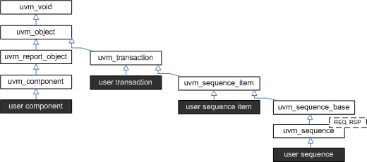

Sequence Classes
Sequences encapsulate user-defined procedures that generate multiple uvm_sequence_item-based transactions. Such sequences can be reused, extended, randomized, and combined sequentially and hierarchically in interesting ways to produce realistic stimulus to your DUT.
With uvm_sequence objects, users can encapsulate DUT initialization code, bus-based stress tests, network protocol stacks-- anything procedural-- then have them all execute in specific or random order to more quickly reach corner cases and coverage goals.
The UVM sequence item and sequence class hierarchy is shown below.

- uvm_sequence_item - The uvm_sequence_item is the base class for user-defined transactions that leverage the stimulus generation and control capabilities of the sequence-sequencer mechanism.
- uvm_sequence #(REQ,RSP) - The uvm_sequence extends uvm_sequence_item to add the ability to generate streams of uvm_sequence_items, either directly or by recursively executing other uvm_sequences.
Summary
| Sequence Classes | |
| Sequences encapsulate user-defined procedures that generate multiple uvm_sequence_item-based transactions. |